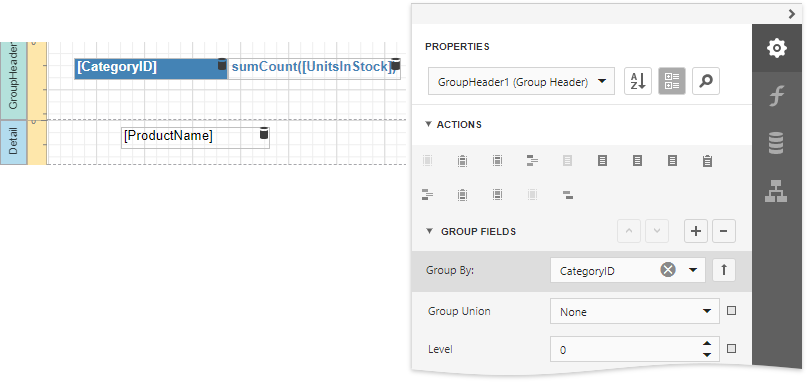
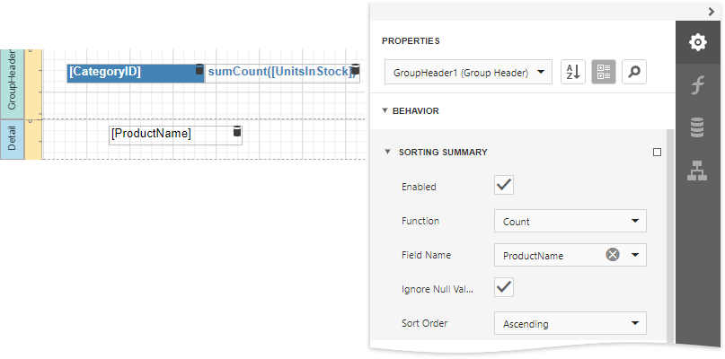
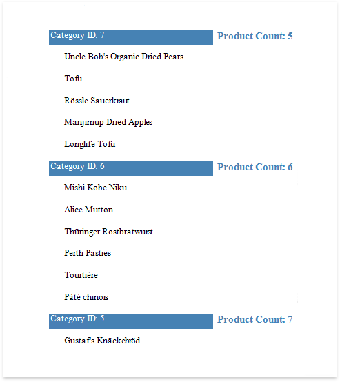

Sort Groups by a Summary Function's Result
This tutorial explains how to sort groups by a summary function result, in particular, by the number of records groups contain.
Create a new or open an existing data-bound report.
You cannot apply grouping unless your report is bound to a data source.
Group the report by the required data field, calculate the record count in each group and construct the required report layout.

Expand the Behavior category and select the Sorting Summary node. Turn on the Enabled option, set the Field option to the data field from the Detail band, and set the Function to Count.

In this editor, you can also define the sorting direction for the group, as well as specify whether or not the Null values should be ignored.
Switch to Print Preview to see the result.
